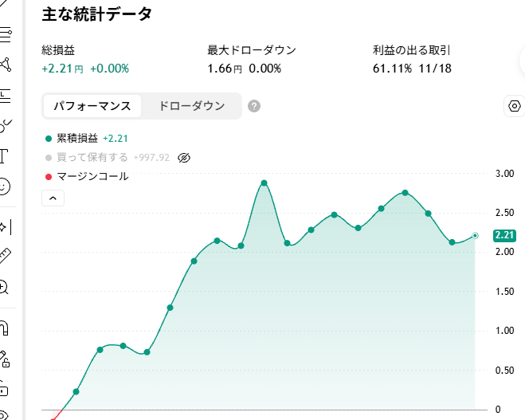

総損益
+2.12 円
建玉中込み +2.21 円
利益率（PF）
2.151
建玉中込み 2.200
勝率
61.1%
11 勝 / 18 取引
最大ドローダウン
1.65 円
含み損も数えた谷
取得日時 2026-11-25 06:11 JST（この日さかのぼれた範囲 2026-10-27 〜 2026-11-24）
このページはその日の TradingView 画面そのままです。古い取引も含めた通算はトップページにあります。
ChartArt「Bollinger + RSI, Double Strategy」v1.1 の日本語表示版。ロジックは原本と同じで、矢印を「買い／売り」表示にして評価損益を円で出すようにしたもの。アラート2本（1時間足・3分足）が稼働中。前回（2026-11-24 06:07）から新しく決済された取引はなく、2026-11-24 00:18 に 159.317 で建てた売り（取引19）を引き続き保有中です。取引一覧CSV上、この売り建玉の評価損益は +0.09 円で、TV画面の総損益（保有中の評価損益を含む）は +2.21 円、最大ドローダウン 1.66 円、利益の出た取引は窓内18件（決済済み）中11件（61.11%）です。なお今回も data_get_strategy_results（内部API）は『No strategy found』で空を返しましたが、レポート画像（開始直後に CME グループの広告ポップアップが被っていたため閉じてから撮り直し、真っ白でないことを check_report.py で確認）と取引一覧CSVはいずれも正常に取得できたため記録を続けました。
戦略レポート（主な統計データと累積損益カーブ）

画像をタップすると原寸で開きます
この日の取引一覧
19 件（新しい順）
日時は上がエントリー・下が決済。小さい字は価格です。
| # | 方向 | 日時 | 損益 (円) | 累積 (円) |
|---|---|---|---|---|
| 19 | 売 | 11/24 00:18 ↓ 建玉中 159.317 → （未決済） | +0.09 | +2.21 |
| 18 | 買 | 11/20 05:33 ↓ 11/24 00:18 159.681 → 159.317 | -0.36 | +2.12 |
| 17 | 売 | 11/18 22:03 ↓ 11/20 05:33 159.418 → 159.681 | -0.26 | +2.49 |
| 16 | 買 | 11/18 14:15 ↓ 11/18 22:03 159.218 → 159.418 | +0.20 | +2.75 |
| 15 | 売 | 11/18 08:48 ↓ 11/18 14:15 159.464 → 159.218 | +0.25 | +2.55 |
| 14 | 買 | 11/16 07:24 ↓ 11/18 08:48 159.63 → 159.464 | -0.17 | +2.30 |
| 13 | 売 | 11/12 16:36 ↓ 11/16 07:24 159.821 → 159.63 | +0.19 | +2.47 |
| 12 | 買 | 11/12 09:33 ↓ 11/12 16:36 159.653 → 159.821 | +0.17 | +2.28 |
| 11 | 売 | 11/11 10:36 ↓ 11/12 09:33 158.89 → 159.653 | -0.76 | +2.11 |
| 10 | 買 | 11/09 16:36 ↓ 11/11 10:36 158.094 → 158.89 | +0.80 | +2.87 |
| 9 | 売 | 11/06 16:09 ↓ 11/09 16:36 158.031 → 158.094 | -0.06 | +2.08 |
| 8 | 買 | 11/06 02:39 ↓ 11/06 16:09 157.773 → 158.031 | +0.26 | +2.14 |
| 7 | 売 | 11/05 19:51 ↓ 11/06 02:39 158.363 → 157.773 | +0.59 | +1.88 |
| 6 | 買 | 11/03 16:48 ↓ 11/05 19:51 157.799 → 158.363 | +0.56 | +1.29 |
| 5 | 売 | 11/02 09:33 ↓ 11/03 16:48 157.719 → 157.799 | -0.08 | +0.73 |
| 4 | 買 | 10/30 06:39 ↓ 11/02 09:33 157.668 → 157.719 | +0.05 | +0.81 |
| 3 | 売 | 10/29 00:36 ↓ 10/30 06:39 158.199 → 157.668 | +0.53 | +0.76 |
| 2 | 買 | 10/28 14:54 ↓ 10/29 00:36 157.816 → 158.199 | +0.38 | +0.23 |
| 1 | 売 | 10/27 11:00 ↓ 10/28 14:54 157.659 → 157.816 | -0.16 | -0.16 |
⚠️ 数字を読むときの注意
- 取得日時は 2026-11-25 06:11 JST。TradingView の Essential プランはさかのぼれる期間が日ごとにずれるため、後日まったく同じ操作をしても集計期間と数字が変わります
- TradingView の画面に出る「利益率」は建玉中の評価損益を含みません。いま建玉中が +0.09 円あり、含めると利益率は 2.151 → 2.200 になります
- 表の損益はスプレッドや実際の約定ズレを含みません。実口座の成績とは一致しません
- 最大ドローダウンは、決済ごとの累積損益に加えて保有中の含み損も谷として数えています。TradingView の表示と計算の土俵が違うことがあります
- この戦略は5分足6年の独立検証では利益率 0.924（ランダムに入った場合より悪い）でした。ここに出ている短期の高い利益率は、期間の取り方で出ることがあります
- 3分足は長期の裏取りができません（手持ちの検証データは最短5分足）